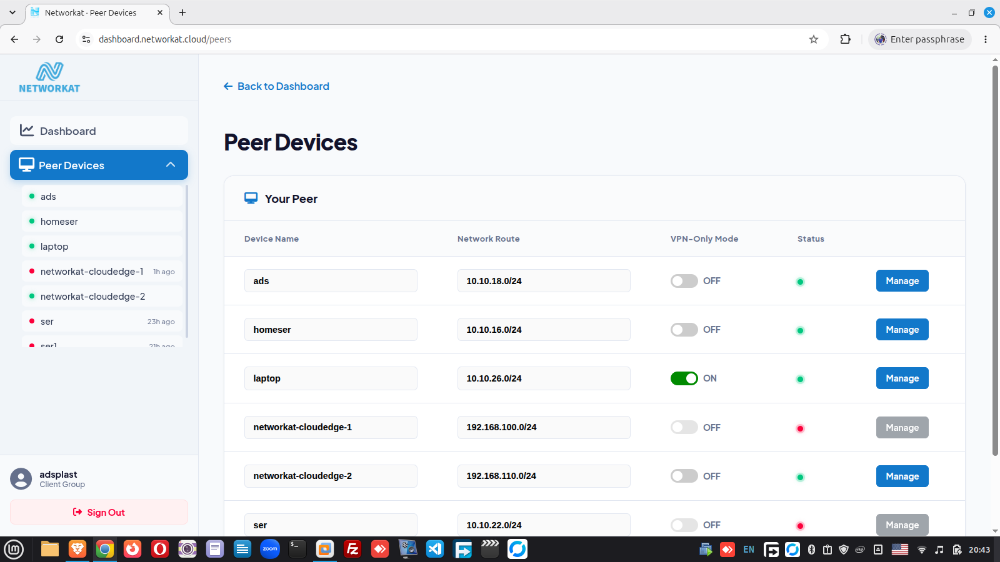

مصدرا إنترنت
اربط خطي إنترنت من مزودين مختلفين للحصول على أعلى جاهزية.
أول جدار حماية عربي بفكر عالمي لم يقدم من قبل. يربط فروع مؤسستك في شبكة واحدة آمنة عبر WireGuard، بأداء عال وإدارة مركزية — بديل حديث لـ MPLS بتكلفة أقل وموثوقية أعلى.
فيديو توضيحي: التنصيب، ربط فرع، الداشبورد، وحجب المواقع.
نفس القدرات المؤسسية التي تقدمها الأسماء الكبرى — مع مزايا في اللغة والتكلفة وسهولة التشغيل مصممة لسوقنا.
| Networkat Guard | Cisco | Fortinet | Palo Alto | |
|---|---|---|---|---|
| جدار حماية عالي الأداء | ✓ | ✓ | ✓ | ✓ |
| SD-WAN: تحول تلقائي وتوزيع حمل | ✓ | ✓ | ✓ | ✓ |
| حجب المواقع وتصفية المحتوى | ✓ | ✓ | ✓ | ✓ |
| ربط الفروع عبر WireGuard بضغطة زر | ✓ | — | — | — |
| واجهة ودعم فني بالعربية | ✓ | — | — | — |
| عتاد اقتصادي ومتطلبات منخفضة (~4GB RAM) | ✓ | متطلبات أعلى | متطلبات أعلى | متطلبات أعلى |
| تنصيب الفرع | أقل من 10 دقائق | يتطلب خبرة | يتطلب خبرة | يتطلب خبرة |
| إدارة مركزية + تطبيق موبايل مدمج | ✓ | منتج منفصل | منتج منفصل | منتج منفصل |
| التكلفة الإجمالية | منخفضة | مرتفعة | مرتفعة | مرتفعة |
مقارنة توضيحية بناء على الإعدادات القياسية الشائعة لكل حل. الأسماء التجارية ملك لأصحابها.
يمكن Networkat Guard الشركات من ربط فروعها داخليا فقط، دون أن تمر بياناتها عبر الإنترنت أو تتعرض لمخاطره. هذا يجعله بديلا حديثا لـ MPLS وتكلفته العالية، وأعلى موثوقية واعتمادية للبنوك والمؤسسات التي تتطلب مصداقية عالية.
أنشئ نفقا مشفرا عبر WireGuard VPN بين أي فرع والمقر أو بقية الفروع بضغطة زر واحدة، لتتواصل الشبكات الداخلية بأمان تام وكأنها في مبنى واحد.
محرك جدار حماية عالي الأداء يحمي شبكتك من التهديدات، مع نظام حجب للمواقع قوي وفعال يمنحك تحكما كاملا في ما يمكن الوصول إليه داخل المؤسسة.
وصل مصدري إنترنت واترك النظام يوزع الحمل بينهما تلقائيا، ويتحول فورا إلى المصدر السليم إذا انقطع أحدهما — اتصال لا يتوقف.
اربط خطي إنترنت من مزودين مختلفين للحصول على أعلى جاهزية.
توزيع تلقائي لحركة البيانات بين المصدرين لاستغلال السرعة كاملة.
عند انقطاع أحد المصدرين ينتقل النظام فورا للآخر دون تدخل.
من إنشاء الحساب حتى تشغيل الجدار في دقائق معدودة.
استورد ملف الـ OVA وشغل الجهاز الافتراضي عبر VMware.
أدخل اسم المستخدم وكلمة المرور:
المستخدم: networkat
كلمة المرور: networkat
نفذ الأمر التالي داخل الجهاز:
curl -fsSL https://pkgs.networkat.cloud/install.sh | sudo bash
سيطلب منك اسم المستخدم وكلمة المرور الخاصين بحسابك على dashboard.networkat.cloud، ثم أكمل عملية التنصيب.
أصبح جدار الحماية جاهزا للعمل، وابدأ بربط فروعك من الداشبورد.
تحكم في فروع شركاتك كلها من داشبورد واحدة على الويب، ومن تطبيق الموبايل أينما كنت — حالة الاتصال، السياسات، الفروع، ومصادر الإنترنت في لوحة واحدة.

شغله على جهاز افتراضي داخل بيئتك مع تخصيص ثلاثة كروت شبكة.
ثبته على جهاز فعلي كمعدة حماية مخصصة للفرع أو المقر.
يعمل على أي توزيعة Linux مبنية على Debian.